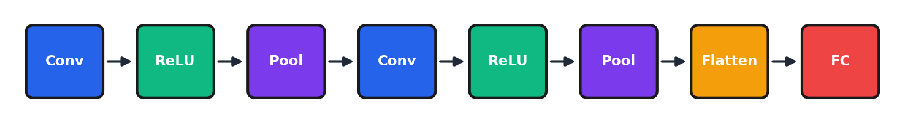

Module 7: Computer Vision & CNNs¶
Introduction¶
Last module we learned neural network fundamentals—layers, activations, backpropagation, PyTorch. Today we specialize those concepts for images.
Images are everywhere in business: quality control in manufacturing, inventory management in retail, medical imaging in healthcare, document processing in finance. Computer vision has transformed all of these industries.
But images present unique challenges. A single photo is millions of numbers. Fully connected networks can't scale. And we need spatial awareness—a cat in the corner is still a cat, but its pixels are in completely different positions.
Convolutional Neural Networks solve these problems. By the end of today, you'll understand how CNNs work, and critically, you'll know how to leverage transfer learning so you don't have to train from scratch.
Transfer learning works broadly: Early CNN layers learn universal visual primitives (edges, textures) that transfer to any domain. Studies show ImageNet transfer helps on X-rays, satellite images, even art classification. Train from scratch only with massive domain data AND truly different image statistics—even then, ImageNet weights as initialization usually help.
Learning Objectives¶
By the end of this module, you should be able to:
- Explain how images are represented as data (matrices, channels)
- Describe why fully connected networks are inefficient for images
- Explain the mechanics of convolutional layers and pooling
- Implement a CNN in PyTorch for image classification
- Apply transfer learning using pre-trained models
- Understand modern CV applications (detection, segmentation, ViT)
7.1 Working with Images¶
How Images Are Represented¶
Digital images are matrices of numbers.
Grayscale: 2D matrix (Height × Width). Each pixel is an intensity from 0 (black) to 255 (white).
Color (RGB): 3D tensor (Height × Width × 3). Three channels—Red, Green, Blue—each with its own intensity matrix.
Example: A 224×224 color image - Shape: (224, 224, 3) - Total values: 224 × 224 × 3 = 150,528 numbers
PyTorch convention: (Batch, Channels, Height, Width)—NCHW format.
from PIL import Image
import numpy as np
img = Image.open('photo.jpg')
img_array = np.array(img)
print(f"Shape: {img_array.shape}") # (Height, Width, Channels)
ImageNet: The Benchmark That Changed Everything¶
| Year | Winner | Top-5 Error | Significance |
|---|---|---|---|
| 2010 | Traditional | 28.2% | Pre-deep learning |
| 2012 | AlexNet | 16.4% | CNN breakthrough |
| 2015 | ResNet | 3.6% | Beat humans (~5%) |
In 2012, AlexNet—a convolutional neural network—crushed the competition. Error dropped from 28% to 16%. That's not incremental improvement; that's a paradigm shift.
By 2015, ResNet beat human performance on ImageNet classification.
Why Fully Connected Networks Fail¶
Problem 1: Too many parameters - 224×224×3 input with 1000 hidden neurons - = 150 million parameters in first layer alone! - Impossible to train, will overfit immediately
Problem 2: No spatial understanding - Fully connected layers treat each pixel independently - A cat in the corner has completely different pixel positions than a cat in the center - The network can't generalize
The solution: Convolutional Neural Networks
Why position matters: A fully connected network treats each pixel independently—"pixel 1,000 is orange" vs. "pixel 50,000 is orange" are completely different inputs. To recognize cats anywhere, it would need examples at every possible position (billions of configurations). CNNs solve this with weight sharing: the same filter scans all positions, so learning to detect a cat's eye at one position automatically applies everywhere.
7.2 Convolutional Neural Networks¶
The Convolution Operation¶
Instead of connecting every input to every output, we slide a small filter across the image.
The operation: 1. Take a small filter (e.g., 3×3) 2. Slide it across the image 3. At each position, compute dot product of filter and patch 4. Output is a "feature map"
Key parameters: - Filter size: 3×3 or 5×5 typical - Stride: How many pixels to move (1 or 2) - Padding: Zeros around edges to control output size - Number of filters: Each learns a different feature
Multi-Channel Convolution¶
Key insight: A "3×3 filter" on an RGB image is actually a 3×3×3 tensor.
When we say "3×3 filter," we're describing the spatial dimensions. But the filter must match the depth of the input.
For an RGB image with 3 channels: - Filter shape: 3 × 3 × 3 = 27 weights (plus 1 bias) - Each channel (R, G, B) has its own 3×3 slice
How the computation works:
At each spatial position:
1. Extract the 3×3×3 patch from the input
2. Multiply element-wise with the 3×3×3 filter (27 multiplications)
3. Sum ALL 27 products + bias → ONE output value
Multiple filters → Multiple output channels:
If we want 64 output channels, we need 64 separate filters, each with shape 3×3×3. Total parameters: 64 × (27 + 1) = 1,792.
conv = nn.Conv2d(
in_channels=3, # RGB input
out_channels=64, # Number of filters
kernel_size=3, # 3×3 filter
stride=1,
padding=1
)
What Filters Learn¶
Filters automatically learn features through training:
- Early layers: Edges, colors, simple textures
- Middle layers: Textures, patterns, shapes
- Deep layers: Object parts, semantic concepts
The first layer might learn vertical edges, horizontal edges, color gradients. The second combines those into textures. The third combines textures into shapes. This is hierarchical feature learning.
Hierarchy emerges automatically: You don't design what each layer learns. Early layers only see raw pixels (can only learn edges); deep layers receive processed representations (can combine into complex features). When researchers visualize trained networks, they find edges in layer 1, textures in layers 2-3, object parts in mid-layers—discovered, not programmed.
Pooling Layers¶
After convolution, we reduce spatial dimensions with pooling.
Max Pooling: Take maximum value in each patch - Reduces spatial dimensions (224 → 112 → 56...) - Adds translation invariance—slight shifts don't change output - Keeps strongest activations
A 2×2 max pool with stride 2 halves each dimension.
Classic CNN Pattern¶

class SimpleCNN(nn.Module):
def __init__(self, num_classes=10):
super().__init__()
self.conv1 = nn.Conv2d(3, 32, kernel_size=3, padding=1)
self.conv2 = nn.Conv2d(32, 64, kernel_size=3, padding=1)
self.conv3 = nn.Conv2d(64, 128, kernel_size=3, padding=1)
self.pool = nn.MaxPool2d(2, 2)
self.fc1 = nn.Linear(128 * 4 * 4, 512)
self.fc2 = nn.Linear(512, num_classes)
self.dropout = nn.Dropout(0.5)
def forward(self, x):
x = self.pool(torch.relu(self.conv1(x)))
x = self.pool(torch.relu(self.conv2(x)))
x = self.pool(torch.relu(self.conv3(x)))
x = x.view(x.size(0), -1) # Flatten
x = torch.relu(self.fc1(x))
x = self.dropout(x)
return self.fc2(x)
Parameter Efficiency¶
For 32×32 RGB image, 64 outputs:
| Layer Type | Parameters |
|---|---|
| Fully Connected | 196,672 |
| Conv2d (3×3) | 1,792 |
~100x fewer parameters!
Why? 1. Local connectivity: Each neuron connects only to a small patch 2. Weight sharing: Same filter applied everywhere
Historical Architectures¶
AlexNet (2012): 8 layers, ReLU, dropout, GPU training. The breakthrough.
VGG (2014): 16-19 layers, all 3×3 convolutions. Showed depth matters.
ResNet (2015): Skip connections enabling 150+ layers.
Skip (Residual) Connections¶
The problem: Very deep networks suffer from vanishing gradients.
The solution: Add the input directly to the output.
class ResidualBlock(nn.Module):
def __init__(self, channels):
super().__init__()
self.conv1 = nn.Conv2d(channels, channels, 3, padding=1)
self.bn1 = nn.BatchNorm2d(channels)
self.conv2 = nn.Conv2d(channels, channels, 3, padding=1)
self.bn2 = nn.BatchNorm2d(channels)
def forward(self, x):
residual = x
out = torch.relu(self.bn1(self.conv1(x)))
out = self.bn2(self.conv2(out))
out += residual # Skip connection
return torch.relu(out)
If the network can't improve on the input, it can at least pass it through unchanged. This creates direct paths for gradients and enables training 100+ layer networks.
Skip connection trade-offs: Memory overhead (must store earlier activations) and architectural constraints (dimensions must match, may need 1×1 convolutions). In shallow networks (3-5 layers), minimal benefit—skip connections solve a deep network problem. For networks >10 layers, skip connections almost always help and are now considered essential in modern architectures.
Common Misconceptions¶
| Misconception | Reality |
|---|---|
| "CNNs only work for images" | CNNs work on any grid data: audio, time series, etc. |
| "Deeper is always better" | Without skip connections, very deep nets fail. Architecture matters. |
| "You need to design CNNs from scratch" | Transfer learning is usually better. |
7.3 Transfer Learning¶
The Core Idea¶
Pre-trained ImageNet models learned general visual features: edges, textures, shapes, patterns. These features are useful for almost any image task!
Two approaches: 1. Feature extraction: Freeze pre-trained layers, train only new classifier 2. Fine-tuning: Train all layers, but with lower learning rate for pre-trained layers
This is how most real-world computer vision is done. You rarely train from scratch anymore.
Feature Extraction¶
Freeze pre-trained layers, train only new classifier.
import torchvision.models as models
model = models.resnet50(pretrained=True)
# Freeze all layers
for param in model.parameters():
param.requires_grad = False
# Replace final classifier
model.fc = nn.Linear(model.fc.in_features, num_classes)
# Only train new classifier
optimizer = optim.Adam(model.fc.parameters(), lr=0.001)
The pre-trained ResNet extracts features. You just train a simple classifier on top.
Fine-Tuning¶
Train pre-trained layers with lower learning rate.
model = models.resnet50(pretrained=True)
model.fc = nn.Linear(model.fc.in_features, num_classes)
# Different learning rates
optimizer = optim.Adam([
{'params': model.layer4.parameters(), 'lr': 1e-4},
{'params': model.fc.parameters(), 'lr': 1e-3}
])
Pre-trained layers get smaller learning rate (they're already good). New layers get larger learning rate.
When to Use Which¶
| Dataset Size | Similarity to ImageNet | Approach |
|---|---|---|
| Small | High | Feature extraction |
| Small | Low | Light fine-tuning |
| Large | High | Fine-tuning |
| Large | Low | Train from scratch |
Example: You have 500 X-ray images. Train from scratch or transfer learning?
Transfer learning! 500 images isn't enough to train from scratch. Even though X-rays look different from ImageNet photos, early-layer features (edges, textures) are still useful.
How similar is "similar enough"? There's no bright line—empirically test: train a classifier on frozen pre-trained features vs. random features. If pre-trained beats random, transfer helps. Even domains that seem "completely different" (medical imaging, industrial defects) usually benefit. Start with transfer learning, try fine-tuning if unsatisfactory, consider training from scratch only with millions of examples AND truly foreign image statistics.
Business Value of Transfer Learning¶
- Cost savings: Days of training → hours
- Data efficiency: Good results with hundreds of images (not millions)
- Time to deployment: Quick proof-of-concept
- No massive compute: Fine-tuning on a laptop is possible
7.4 Modern Vision Applications¶
Object Detection¶
Task: Find objects AND their locations (bounding boxes)
Not just "there's a dog" but "there's a dog at coordinates (x, y, w, h)."
Key architectures: - YOLO: Fast, single-pass detection ("You Only Look Once") - Faster R-CNN: Two-stage, more accurate but slower
Applications: Autonomous vehicles, security cameras, retail inventory
Image Segmentation¶
Semantic segmentation: Label every pixel with a class (road, car, person)
Instance segmentation: Separate individual objects (this car vs that car)
Key architecture: U-Net—encoder-decoder with skip connections
Applications: Medical imaging, autonomous driving, photo editing
Vision Transformers (ViT)¶
The latest revolution: apply transformer architecture to images.
How it works: 1. Split image into 16×16 patches 2. Flatten patches into sequences 3. Apply transformer encoder (same architecture as NLP!)
Why it matters: - State-of-the-art on many benchmarks - Unified architecture for vision AND language - Enables CLIP, DALL-E, multimodal AI
Business Applications¶
| Industry | Application |
|---|---|
| Retail | Inventory monitoring, checkout-free stores |
| Manufacturing | Defect detection, quality control |
| Healthcare | Radiology, pathology analysis |
| Agriculture | Crop monitoring, disease detection |
Reflection Questions¶
-
An image is 1000×1000 pixels RGB. How many input features? Why is this problematic for fully connected networks?
-
If you shift a cat 10 pixels to the right, how would a fully connected network's perception change vs. a CNN?
-
A 3×3 conv filter has 9 weights per channel. How does this compare to fully connected for the same output?
-
After 3 max pooling layers of 2×2, what happens to a 224×224 image?
-
How do skip connections help train very deep networks?
-
You have 500 X-ray images. Train from scratch or transfer learning? Why?
-
Why fine-tune later layers before earlier layers?
Practice Problems¶
-
Calculate output size: 64×64 input, 3×3 kernel, stride=1, padding=0
-
Calculate parameters: Conv2d with in_channels=32, out_channels=64, kernel_size=3
-
Design a CNN for 28×28 grayscale images (MNIST) with 3 conv layers
-
Set up transfer learning code for a 5-class classification problem using ResNet18
-
Explain why a 7×7 filter might be replaced by two 3×3 filters
Chapter Summary¶
Six key takeaways from Module 7:
-
Images are high-dimensional; FC networks don't scale
-
CNNs use local filters with weight sharing (100x fewer parameters)
-
Pooling reduces dimensions and adds translation invariance
-
Skip connections enable training very deep networks
-
Transfer learning is usually better than training from scratch
-
Modern CV: detection, segmentation, Vision Transformers
What's Next¶
In Module 8, we tackle Natural Language Processing: - Text as sequences - Word embeddings - Transformers and attention - Pre-trained language models
Vision Transformers connect both domains—the same architecture that powers GPT and BERT can also process images!